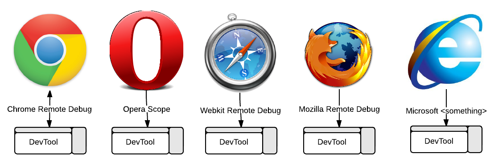

The initiative.
RemoteDebug is an initiative to bring a common remote debugging protocol to today's browsers.
Today each browser vendor is building their own tailormade in-browser development tool (DevTool), together with their own protocol to enable remote debugging of browsers across devices.

These protocols are incompatible, which means existing DevTools can't debug other browsers, and tooling implementers needs to put a lot of effort into adding support for each protocol, with the result that we haven't seen that many integrations.
The open web follows standards. Our tools should too.
The vision.
The vision is to enable a new generation of DevTools and editors to communicate with our browsers.
A few thoughts:
- What if it was possible to use Chrome DevTools to debug Firefox, or use Firefox DevTools to debug Chrome?
- What if you could debug your app in IE and Chrome directly from Sublime Text?
- What if the browser had an API, you could use to extract and manipulate information, to build better development tools?
- What if you could use your favorite debugging tool to debug your beautiful PhoneGap-app inside an embeded WebView?
The plan.
The long-term goal is to get all major browser vendors to implement and use the "RemoteDebug protocol", but we know this is going to take some time, especially to get everyone on board. So how are we going to make this happen?
To get a baseline, we propose to use the existing Chrome Remote debugging protocol as our starting point to define what we would call the "RemoteDebug protocol".
The reason for choosing the Chrome Remote debugging protocol is simply that both the protocol and API are documented. The protocol is a part of Chromium, which is used by both Chrome and Opera, which means we got two browsers supported, and in addition we already have several editors and tools who have integrated with the protocol.

With the protocol in place, the first step is to provide bridge-implementations for all major browsers, in order to enable cross-browser communication. Once we have the bridges in place, each browser-vendor can start implement RemoteDebug into their browser and their related DevTool, to bring us to a native baseline.
When we get there - a new world of web tooling has openend.
Get involved.
We've got a lot of work ahead, so we need your help. The first thing you should do is to help us by spreading the word by tweeting and telling the world about this initative. Secondly you should contribute to one of the open-source projects, so we can increase the usage of RemoteDebug.
We need to make this happen. It's about time.
Editors and tools that work with RemoteDebug:
Bridges:
-
WebKit Remote Debugging Protocol to Safari Remote Web inspector bridge.
-
This bridge enables communication over the RemoteDebug protocol with Firefox.
-
Node debugger based on Blink Developer Tools
Clients:
-
Node client for Chrome Remote Debugging
Editors:
-
Light Table is a new interactive IDE that lets you modify running programs and embed anything.
-
Debug Javascript right in the Sublime Text editor.
-
Brackets is an open source code editor for web designers and front-end developers.
-
Vim meets Chrome. Experiments at driving a remotely running Chrome instance from Vim.
Tools:
-
The Selenium WebDriver implementation for Chrome that users Chrome debugging protocol.
-
Telemetry is a performance testing framework used by the Chromium project.
-
Remote JavaScript console for Chrome/Webkit.